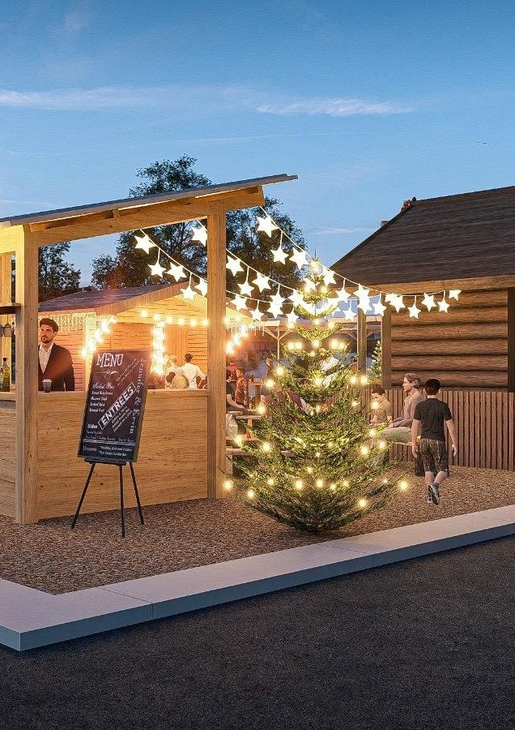
Solothurn
Ein Ort. Ein Winter. Gemeinsame Momente.
27.11.2026 – 3.1.2027
Das Projekt
Ein temporärer Winter-Treffpunkt, der Wärme, Genuss und Begegnung mitten in Solothurn zusammenbringt.
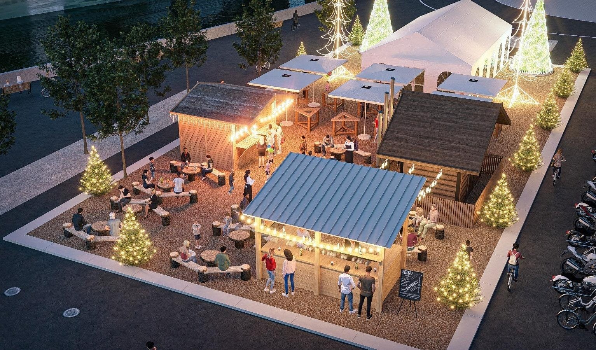
Winter Post verwandelt einen urbanen Ort in eine stimmungsvolle Winterwelt aus Holz, Licht, Tannen und gemütlichen Aufenthaltsbereichen. Das Konzept verbindet Gastronomie, Begegnung und Atmosphäre zu einem niederschwelligen Erlebnis für die Bevölkerung, Familien, Freunde, Firmen und Besucher der Stadt.
Im Mittelpunkt steht kein klassischer Weihnachtsmarkt, sondern ein zeitgemässer, hochwertiger Winter-Pop-up: ein Ort zum Ankommen, Verweilen, Essen, Trinken und Zusammensein. Die Gestaltung schafft bereits beim Betreten das Gefühl eines kleinen Winterdorfes, mitten in Solothurn.
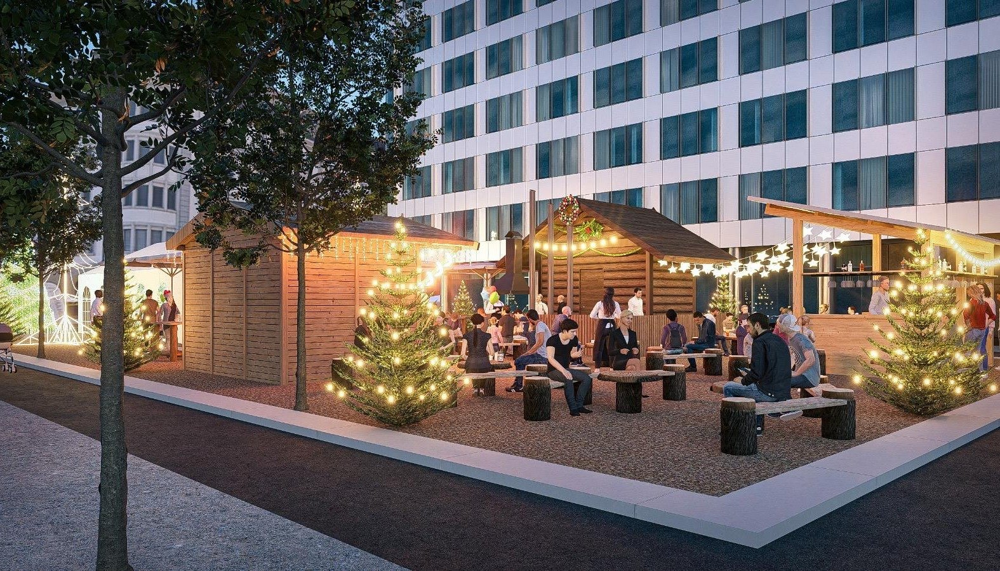
Vision
Gerade in den Wintermonaten braucht eine Stadt Orte, die Menschen zusammenbringen. Winter Post schafft einen solchen Ort: offen, einladend und atmosphärisch. Ein Treffpunkt, an dem man nach der Arbeit noch auf einen warmen Drink vorbeikommt, mit der Familie etwas isst oder mit Freunden einen Winterabend geniesst.
Die Vision ist eine Winterdestination mit eigener Identität: lokal verankert, visuell stark und dennoch unkompliziert. Holz, warmes Licht und natürliche Materialien schaffen Geborgenheit; ein sorgfältig kuratiertes Food-&-Drink-Angebot sorgt für Genuss. Kleine Programmpunkte können zusätzliche Impulse setzen, ohne den Charakter als Begegnungsort zu verlieren.
Ein Winterort, über den man spricht und an den man gerne zurückkehrt.
Konzept auf einen Blick
Die zentralen Eckdaten des Projekts auf einer Seite.
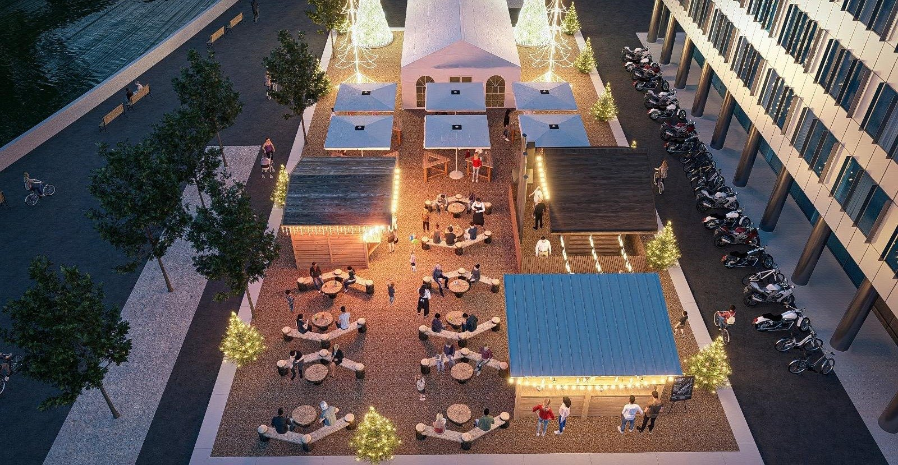
Format
Temporäres Winter-Pop-up
Ort
Alter Postplatz, 4500 Solothurn
Saison
27. November 2026 – 3. Januar 2027
Öffnungszeiten
Täglich 11:00 – 22:00 Uhr
Angebot
Food, Drinks & warme Winterklassiker
Atmosphäre
Holz, Licht, Tannen & Winter-Lounge
Zielgruppe
Bevölkerung, Familien, Freunde, Firmen & Gäste der Stadt
Winter Post ist modular gedacht und kann in Infrastruktur, Möblierung und Programm an die definitiven Rahmenbedingungen und Bewilligungen angepasst werden.
Genuss
Einfach, hochwertig und passend zur kalten Jahreszeit.
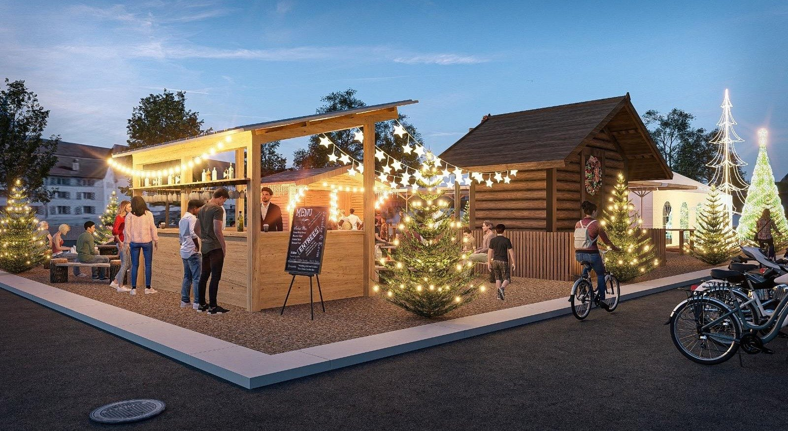
Das kulinarische Angebot von Winter Post soll Wärme und Geselligkeit auf den Teller und ins Glas bringen. Geplant ist eine kompakte Auswahl an beliebten Wintergerichten, unkomplizierten Snacks und saisonalen Spezialitäten. Ergänzt wird das Angebot durch Heissgetränke, klassische Drinks und alkoholfreie Alternativen.
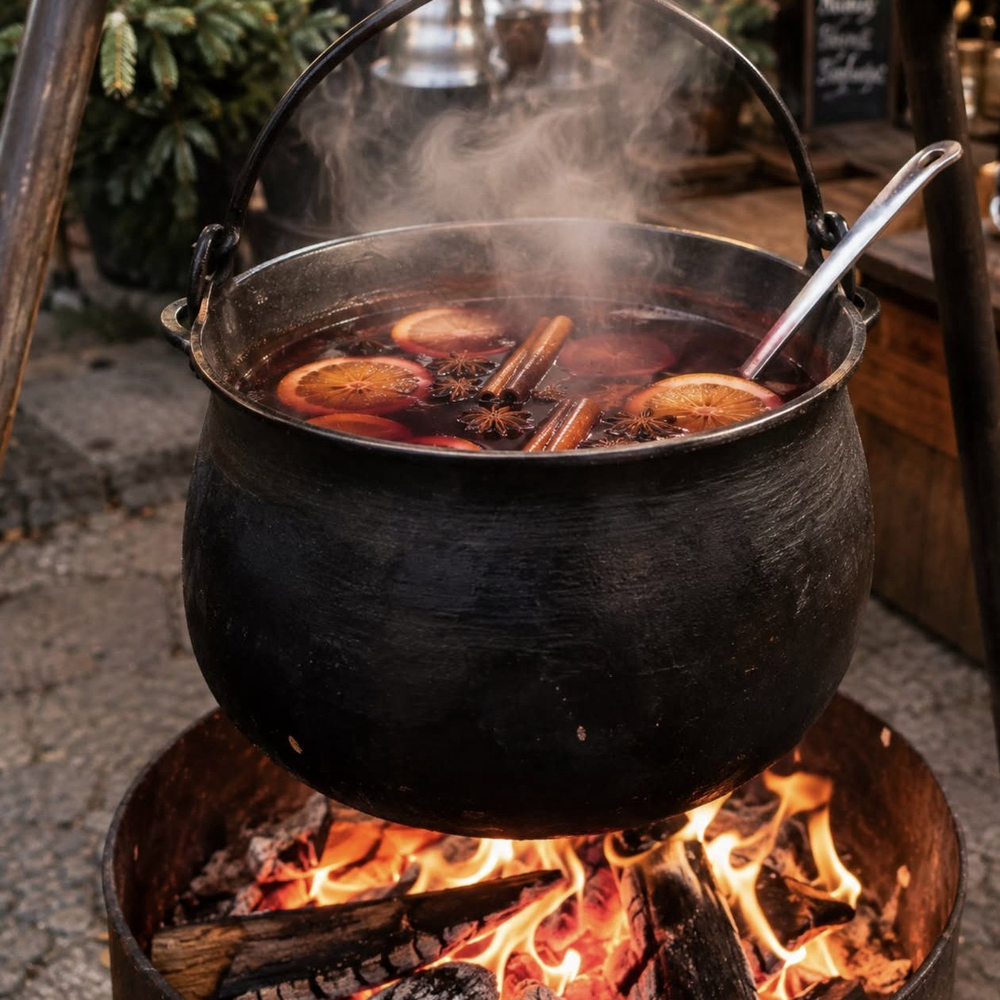
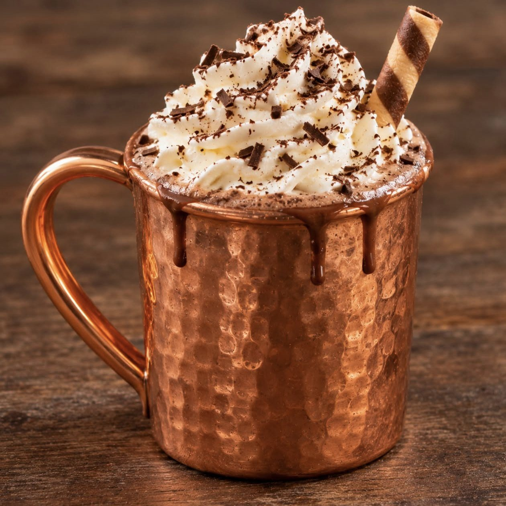
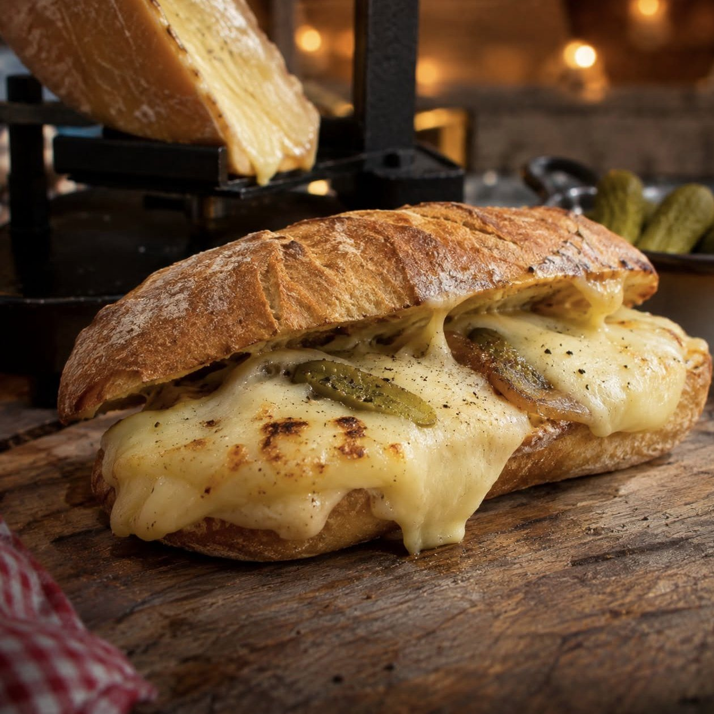
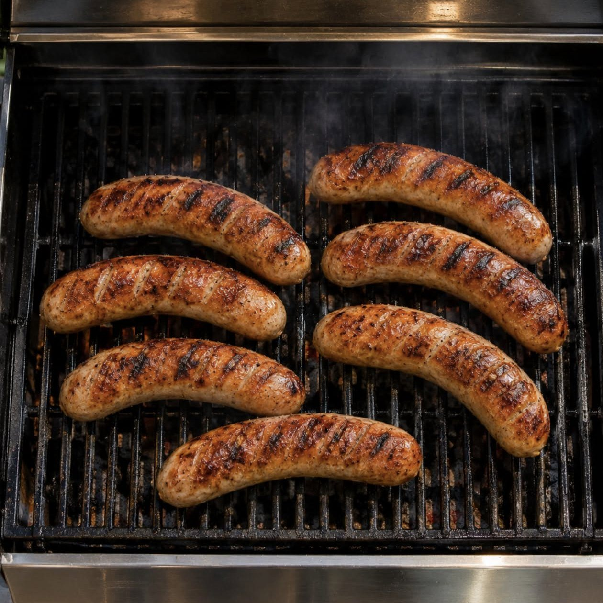
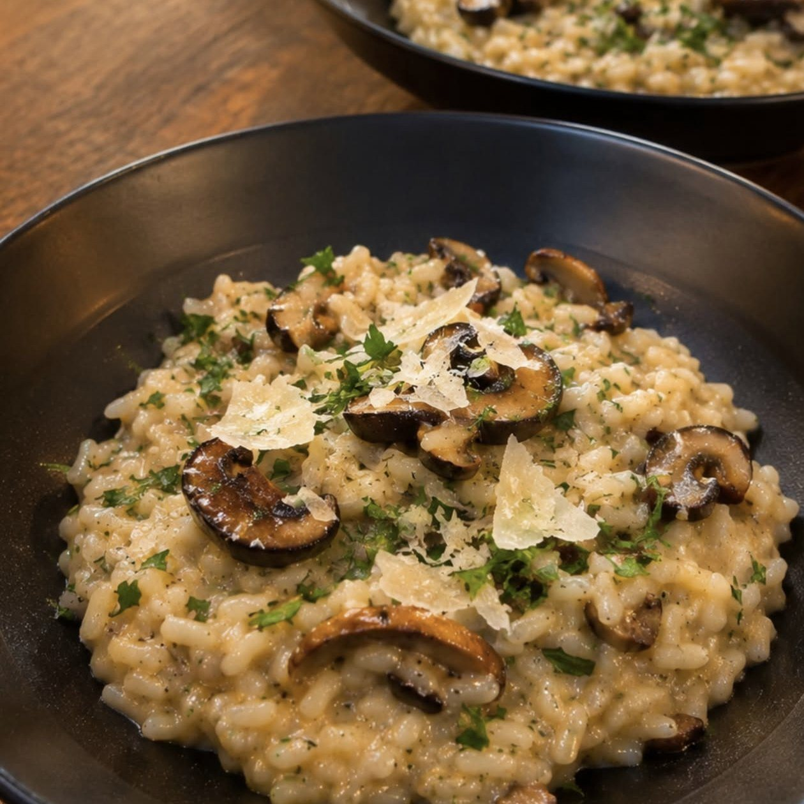
Warm & herzhaft
Wintergerichte, Snacks und unkomplizierte Klassiker.
Heiss & gemütlich
Kaffee, Tee, Punsch und weitere warme Getränke.
Regional gedacht
Wo sinnvoll, Zusammenarbeit mit lokalen und regionalen Partnern.
Verantwortung
Ein temporäres Projekt kann hochwertig wirken und gleichzeitig bewusst mit Ressourcen umgehen.
Winter Post setzt auf eine möglichst ressourcenschonende Umsetzung. Die modulare Infrastruktur ist wiederverwendbar, natürliche Materialien prägen die Gestaltung und Abfälle werden konsequent getrennt.
Mehrweg-Lösungen sollen dort eingesetzt werden, wo sie betrieblich sinnvoll und umsetzbar sind.
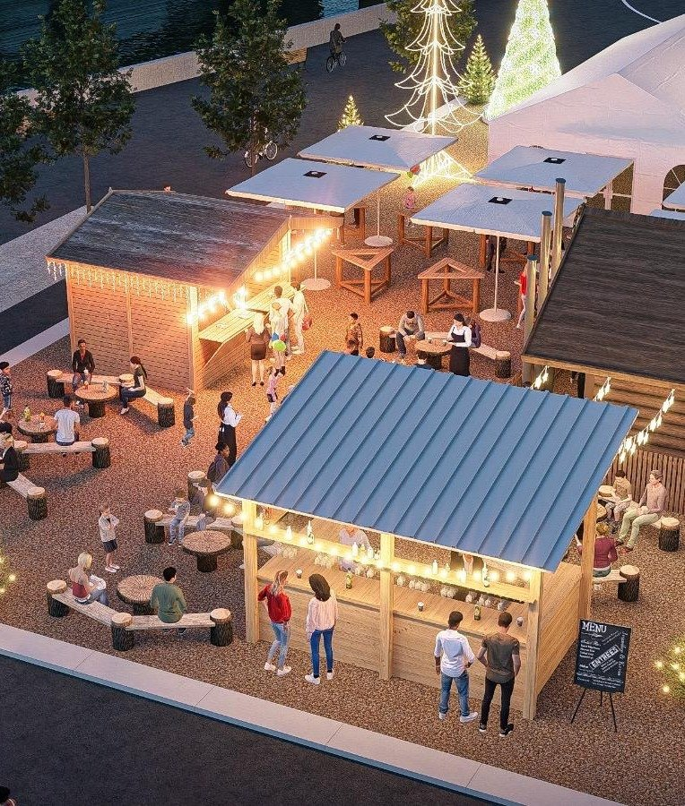
Modulare Hütten, Mobiliar und Dekoration für mehrere Einsätze.
Klare Abfallstationen für Glas, PET/Alu, Rest- und organische Abfälle.
Bevorzugung von Mehrweggeschirr und langlebigen Lösungen.
Kurze Wege und lokale Partnerschaften, wo immer möglich.
Planung
Professionelle Planung bildet die Grundlage für einen zuverlässigen und sicheren Winterbetrieb.
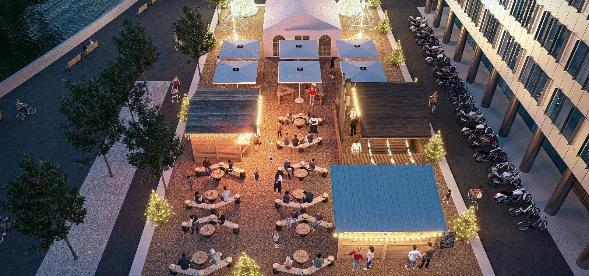
Strom, Wasser, Abwasser, Beleuchtung, Sanitär, Logistik und wetterfeste Bereiche werden mit den zuständigen Stellen und Fachpartnern auf die definitive Fläche abgestimmt.
Flucht- und Rettungswege, Brandschutz, Erste Hilfe, Besucherführung sowie wetterbedingte Massnahmen werden in einem betrieblichen Sicherheitskonzept definiert.
Besonderes Augenmerk gilt rutschfesten Wegen, Schnee- und Eismanagement, sicheren Heiz- und Elektroinstallationen sowie einer guten Ausleuchtung der Anlage.
Die konkrete Umsetzung erfolgt in Abstimmung mit Stadt, Behörden, Feuerwehr und den zuständigen Fachstellen.
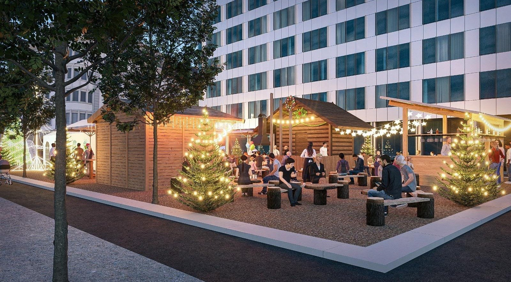
Das Team
Als erfahrene Crew mit einem erfolgreichen Jahrzehnt im Eventmanagement sind wir die optimale Wahl, um Winter Post zu gestalten. Unsere vielseitige Expertise reicht von Musikevents bis zu vergleichbaren Pop-up-Konzepten. Wir haben bewiesen, dass wir nicht nur organisieren, sondern Erlebnisse schaffen.
Unser Team beherrscht die nahtlose Koordination von Gastronomie, Künstlern, Infrastruktur, Technik und Manpower. Dabei verfolgen wir einen klaren Anspruch: Erwartungen nicht nur zu erfüllen, sondern mit einer professionellen, gastfreundlichen und atmosphärischen Umsetzung zu übertreffen.
Mit Winter Post wollen wir einen Ort schaffen, der die kalte Jahreszeit in Solothurn bereichert und das Herz der Stadt berührt.
Aus Solothurn. Für Solothurn. Mit Erfahrung, Netzwerk und Leidenschaft.
kontakt@winterpost.ch
Web
winterpost.ch
@winterpostsolothurn